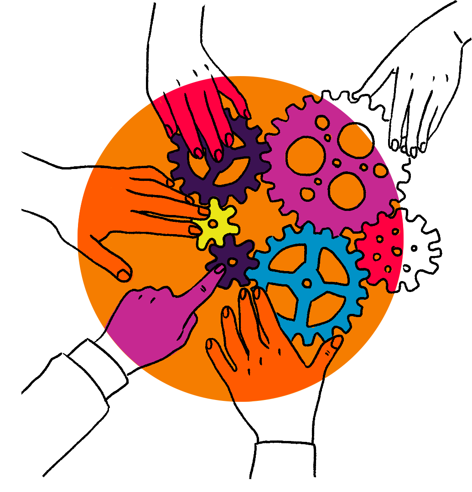

I have always been a creator. As a child, I loved building Legos and drawing my very own creations.
Of course, those were only products of my imagination. Now, as an engineering student, I want to bring
things to reality. I wish to make an impact on the world through creating things that help us all.
If you want to know about my personal life, some of my hobbies are making music, drawing, gaming, and hiking.
Gaming is what got my interested in computers in the first place. After playing my first game, I instantly
wanted to learn how I could make my own. As I grew older, I began to become interested in computers in general.
I am interested in both software and hardware, which is why I chose to be a Computer Engineering major. I love
how the limits are endless with computer engineering, which allows me to showcase my creativity. I also love the
outdoors, especially hiking. I really appreciate nature a lot. Seeing new things is also really enjoyable to me.
